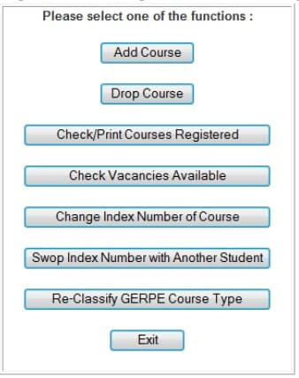
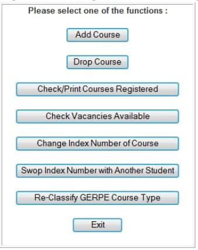

The universe has brought you here to NTU by no accident.
An exciting journey lies ahead of you.
At the beginning of every semester, a war of intense magnitude wages across the island of Pulau NTU. A war of survival, every man for himself. Some leave the war victorious while others are left fighting over scraps.
This is STAR Wars.
Looking win the war? Seek and ye shall find. Coined by NTU students, STAR Wars is a course registration process in NTU where you battle with your peers to get the courses you want for a good timetable.
Let us begin.
 
